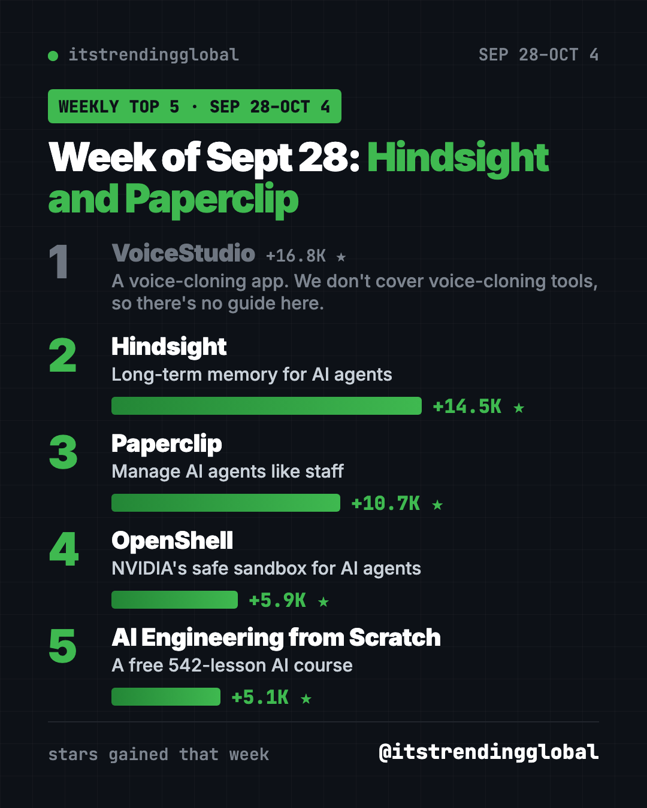
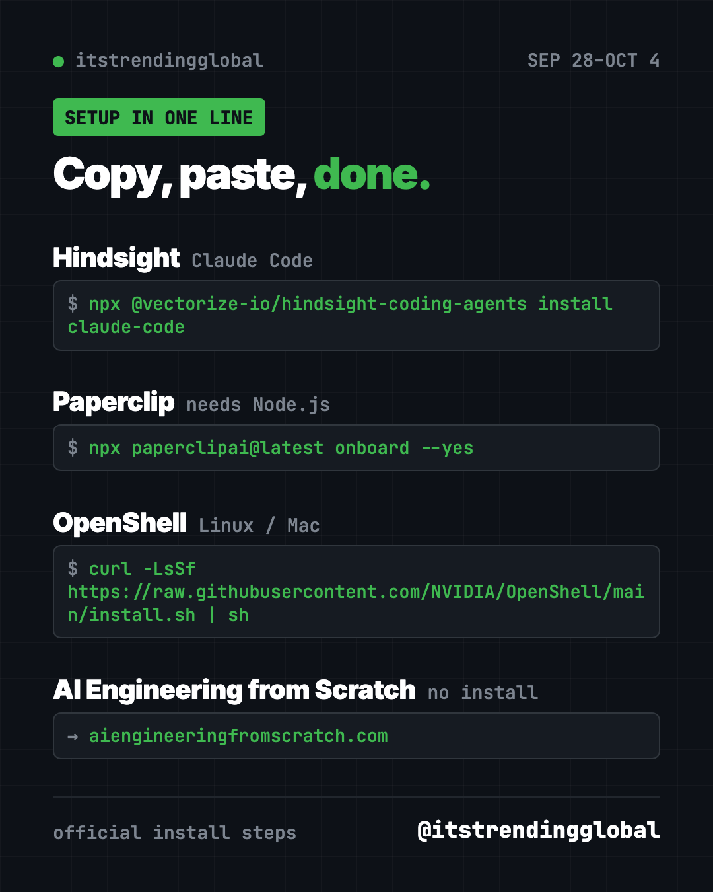

Home › Top repos › GitHub trending this week
GitHub Trending September 28, 2026: Hindsight and Paperclip
GitHub trending September 28 2026: Hindsight, Paperclip, NVIDIA's OpenShell and a free 542-lesson AI course, with setup steps for each.

GitHub trending September 28 2026 to October 4 was a big week for Hindsight, an AI memory system. It nearly doubled its previous week with +14.5K stars. Paperclip, which runs AI agents like a small company, added +10.7K.
The top spot went to a voice-cloning app, and we skip those (more in the table). So this page covers the next four: AI memory, an AI team manager, a safety box from NVIDIA and a giant free course. Here's how each one helps.
Key takeaways
- Hindsight jumped from +7.3K to +14.5K. It gives AI helpers long-term memory.
- Paperclip added +10.7K. It manages AI agents like staff, with budgets.
- OpenShell is NVIDIA's locked-down sandbox for running AI agents safely.
- AI Engineering from Scratch is a free course with 542 lessons.

GitHub trending September 28 2026: how they compare
| Rank | Repo | Stars this week | What it does | Best for | Free? | Setup |
|---|---|---|---|---|---|---|
| 1 | VoiceStudio | +16.8K | A voice-cloning app. We don't cover voice-cloning tools, so there's no guide here. | n/a | n/a | n/a |
| 2 | Hindsight | +14.5K | Memory that helps AI agents learn | Daily AI helper users | Yes (MIT) | One command |
| 3 | Paperclip | +10.7K | Run AI agents like a company | Founders, small teams | Yes (MIT) | One command |
| 4 | OpenShell | +5.9K | Safe sandbox for AI agents | Developers, IT teams | Yes (Apache-2.0) | One command plus Docker |
| 5 | AI Engineering from Scratch | +5.1K | 542-lesson AI course | Learners who want to build | Yes (MIT) | None, read online |
Star gains cover Sep 28 to Oct 4, 2026. Totals were checked on GitHub on October 16, 2026.
1. Hindsight: AI that remembers and learns
Stars: +14.5K this week · about 50.0K total
What it is: A memory system from Vectorize. It saves what matters from your chats, finds it later and reflects on it. Your AI helper gets more useful the more you use it. It led the chart the week before.
Who it's for: Anyone tired of re-explaining their project to an AI.
Everyday use: Your AI remembers your writing style and your client names next week.
Install it: For Claude Code, copy and paste this:
npx @vectorize-io/hindsight-coding-agents install claude-code
Let Claude or Codex do it:
Set up Hindsight from github.com/vectorize-io/hindsight for this AI helper and explain where my memories are kept.
Full steps in our Hindsight guide.
2. Paperclip: a company of AI agents
Stars: +10.7K this week · about 102.6K total
What it is: A self-hosted app that organizes AI agents into a company, with goals, roles and budgets. You bring the agents, like Claude Code, Codex or Cursor. No Paperclip account is needed.
Who it's for: Solo founders and small teams who use several AI agents.
Everyday use: Set one agent to write weekly blog drafts and another to check them, all within a spending cap.
Install it: You need Node.js 24.11 or newer:
npx paperclipai@latest onboard --yes
Let Claude or Codex do it:
Install Paperclip from github.com/paperclipai/paperclip and help me set up one company, one goal and one agent with a small budget.
See our Paperclip guide.

3. OpenShell: a safe box for AI agents
Stars: +5.9K this week · about 16.3K total
What it is: NVIDIA's runtime for running AI agents safely. Each agent works inside a sealed sandbox. Rules decide which files it can open, which websites it can reach and where your passwords can be used. So an agent can't wander where it shouldn't.
Who it's for: Developers and IT teams who let AI agents run on their own.
Everyday use: Let an agent install packages and test code, without risking the rest of your computer.
Install it: You need Linux or an Apple Silicon Mac, plus Docker or Podman. Copy and paste this:
curl -LsSf https://raw.githubusercontent.com/NVIDIA/OpenShell/main/install.sh | sh
openshell sandbox create --name demo
Let Claude or Codex do it:
Install NVIDIA OpenShell from github.com/NVIDIA/OpenShell, create a demo sandbox, and explain its default rules in plain words.
4. AI Engineering from Scratch: a free 542-lesson course
Stars: +5.1K this week · about 69.7K total
What it is: A free course with 542 lessons in 20 phases. You learn by building real AI pieces in Python, TypeScript, Rust and Julia. You can read it on the website, learn with a coding agent, or run the code yourself.
Who it's for: People who want to go from AI user to AI builder.
Everyday use: Do one short lesson a day on your lunch break.
Install it: No install needed: start on aiengineeringfromscratch.com. To get the course skills in your AI helper, copy and paste this:
npx skills add rohitg00/ai-engineering-from-scratch
Let Claude or Codex do it:
Use github.com/rohitg00/ai-engineering-from-scratch to make me a 4-week beginner plan, then teach me the first lesson.
See AI Engineering from Scratch on GitHub
Which one should you try first?
- You want to learn AI properly: open AI Engineering from Scratch. No setup.
- Your AI keeps forgetting: add Hindsight.
- You run several agents: use Paperclip, and put risky ones inside OpenShell.
💡 Tip: OpenShell's default sandbox has no AI agent inside. NVIDIA's docs show how to add one in a "Run Your First Agent" guide.
Wrap up September with the top 5 GitHub repos of September 2026, or jump ahead to October 2026's top repos and October 2026 in AI. Next: the week of Oct 5.
FAQ
What was on GitHub trending September 28 2026?
The top spot went to a voice-cloning app we don't cover. After it came Hindsight (+14.5K stars), Paperclip (+10.7K), OpenShell (+5.9K) and AI Engineering from Scratch (+5.1K).
Do I need a Paperclip account to use it?
No. Paperclip is self-hosted, so it runs on your own machine. You bring your own agents, like Claude Code, Codex or Cursor.
Does OpenShell work on Windows?
The README lists Windows with WSL 2 as experimental. Linux and Apple Silicon Macs are the main options.
Is AI Engineering from Scratch good for beginners?
It has a beginner route, and you can read it free in your browser. It does teach coding, so expect to learn some.
Want one new free tool explained every day? Follow @gittrendingglobal on Instagram.
Keep reading

Trending GitHub Repos October 2026: The Top 5 So Far
The trending GitHub repos of October 2026 so far: a free Photoshop-style editor, an AI art studio, a big AI model for gaming PCs and more, explained.

Trending GitHub Repos This Week, Oct 5 2026: The Top 5
Trending GitHub repos this week Oct 5 2026: Matt Pocock's skills, the openGym workout tracker, e2e testing, HyperFrames video and claude-mem memory.

Best GitHub Repos Q3 2026: The 5 Biggest of the Quarter
The best GitHub repos of Q3 2026 (July to September): DeepSeek's AI agent, AI diagrams, expert coding skills and a sourced life guide, explained simply.